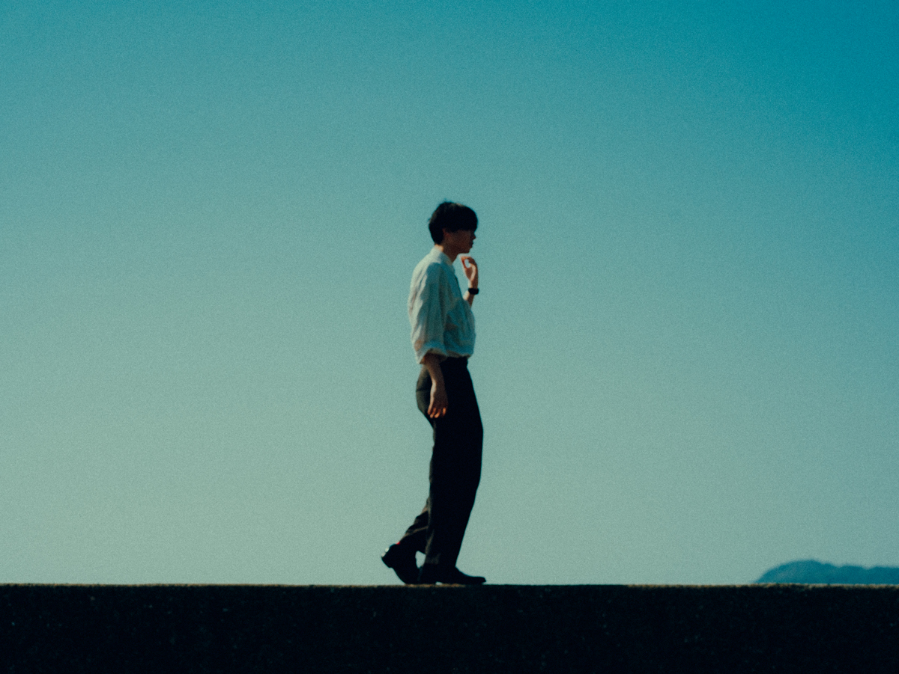

2002年 福岡県生まれ
活動内容はイラスト、写真、映像、音楽など多岐にわたる
大学院では、SNS時代における「顔を見せない自己表現」について研究しています。 後ろ姿や顔を隠した写真、ぼやけたアイコンなど、本来は“失敗”ともされる表現が、なぜ自分を表す手段として選ばれるのかに興味があります。 「顔が見えない同士」のコミュニケーションや、曖昧さを含んだ自己表現について、研究と制作の両面から考えています。 学部時代からSNSでの発信活動や映像制作を続けており、カフェのSNS運用支援、学園祭PR動画、MV制作などにも携わってきました。 うまくいったことだけでなく、ターゲット分析不足で思うように届かなかった経験もあり、その反省を活かして卒業制作では発信設計を見直し、個人チャンネル登録者数を2,000人増加させました。 また、メディア系サークルでは映像部門のリーダーとして企画から納品までを担当し、スマートフォンでも高品質な映像を制作できるノウハウを共有しながら後進育成にも取り組みました。 最近は、福岡の伝統工芸品をWEB上でアーカイブするプロジェクトにも参加しています。 研究と実践を行き来しながら、「どうすれば人に届く表現になるのか」を日々考えています。